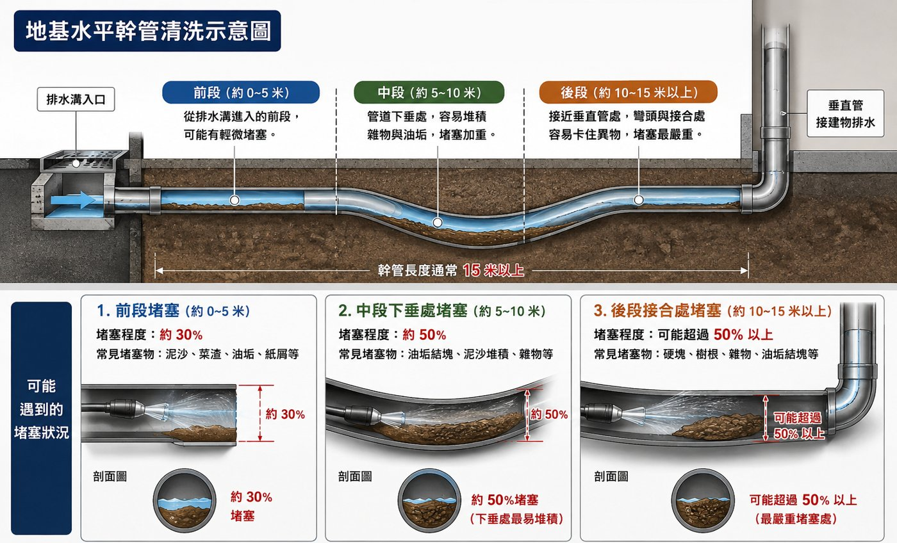
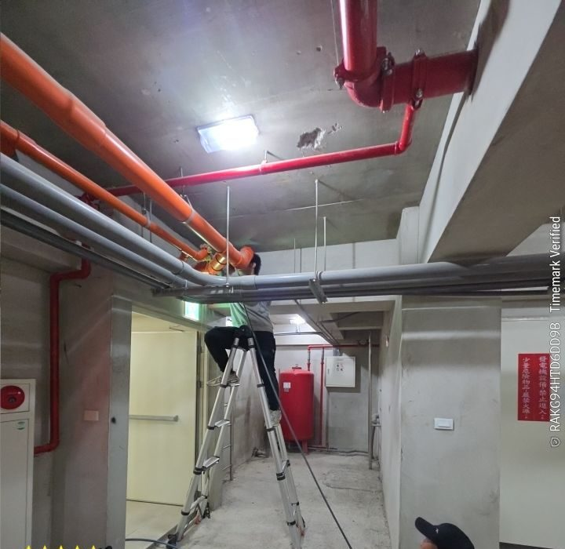
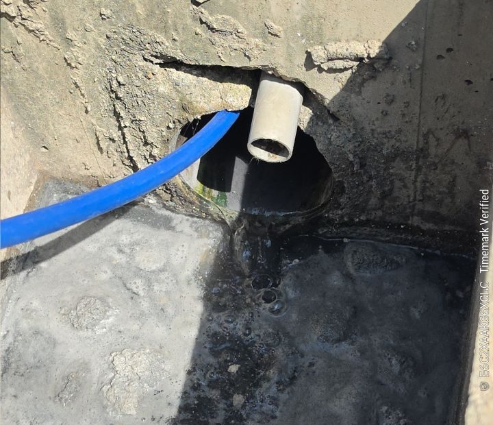
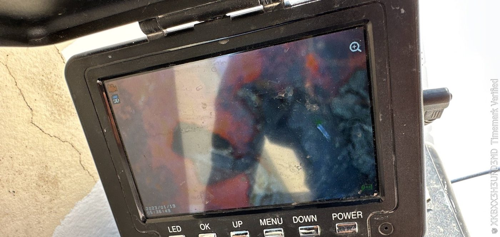
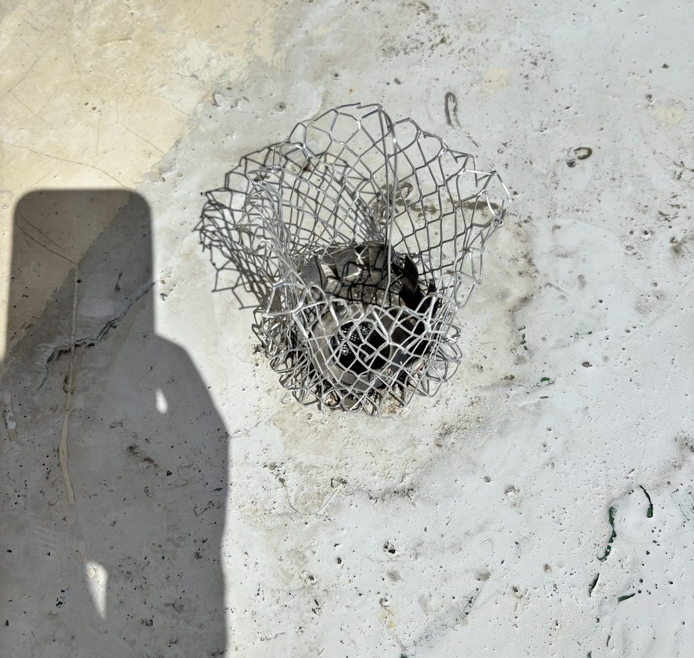
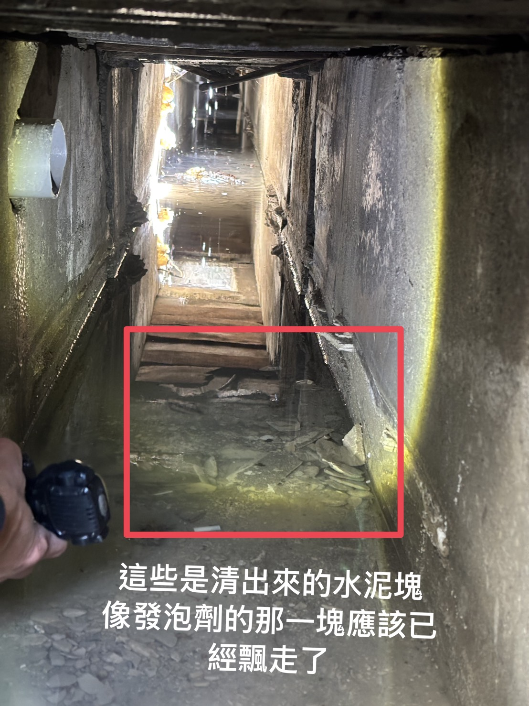
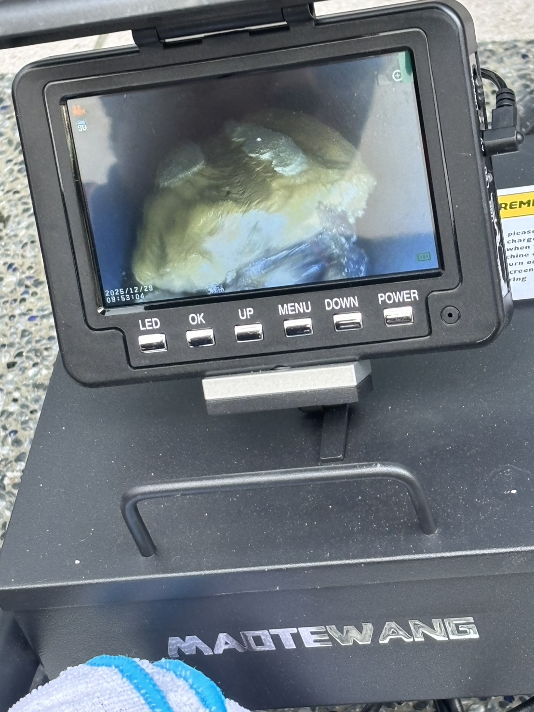
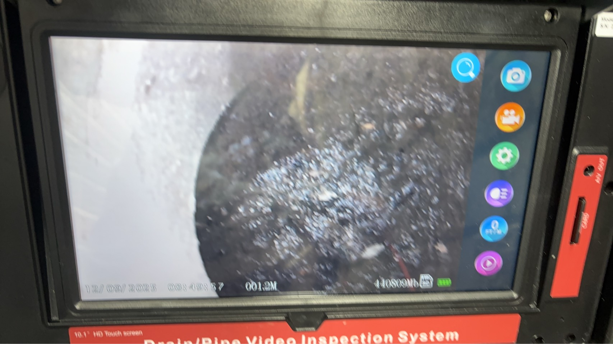
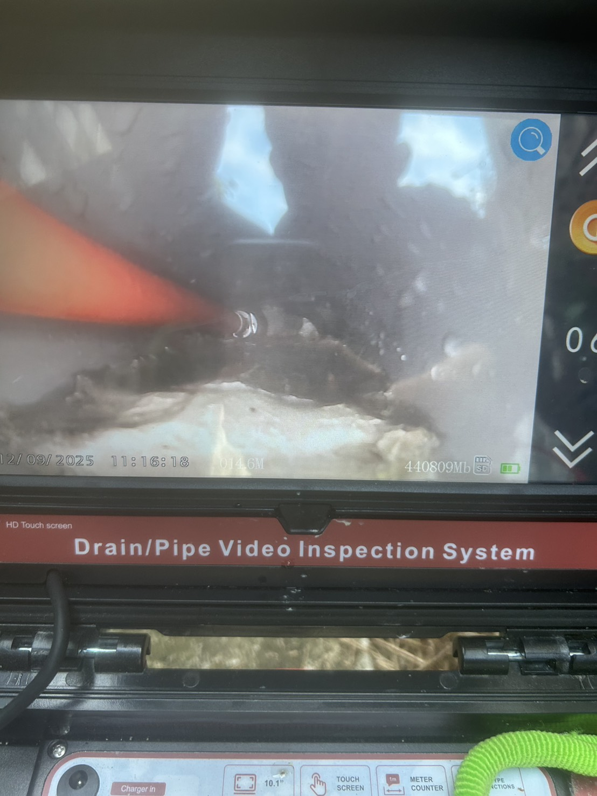
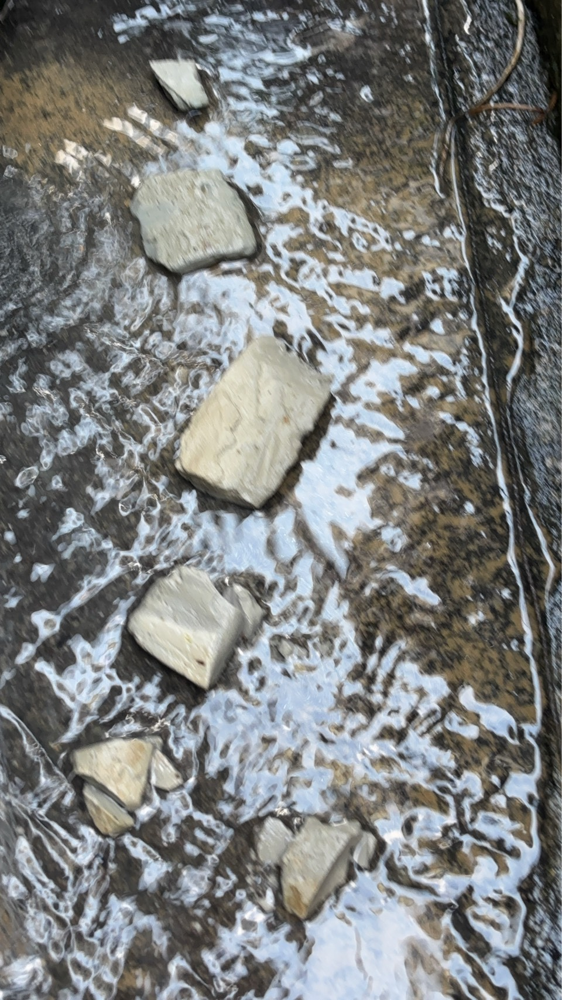

地下室的水平幹管很少有人清，我們用內視鏡檢查，大部分都已經積了一層砂漿

專業設備、透明記錄、準時到場
深入管道精準定位阻塞點，不猜測、不亂挖，施工前先診斷再下刀。
工業級大流量機型，360° 沖刷管壁，砂石、水泥塊、油脂各類阻塞一次處理。
每次清管均附上清洗前、後的影像，讓您看得到成果、說得清楚。
清管後廢棄物收拾完畢，集中放置於指定位置，現場整潔收工。
依實際現場狀況評估報價，歡迎來電詢問
※ 依社區戶數及管線數量規劃保養週期
※ 報價依現場實際狀況為準
不確定費用？歡迎來電說明狀況，免費評估
💬 LINE 立即詢價真實案場記錄，讓成果說話









管路還能排水時，管委會就先安排保養。內視鏡檢查發現水平大管雖然還能排水，管內積料已達半堵塞。清洗地下室吊管、地基幹管共 7 支，以及頂樓屋凸地排 8 孔。
以內視鏡逐戶檢查浴室、廚房、陽台、洗曬間排水，記錄每一支管的堵塞程度，加上頂樓屋凸地排，整理成各管狀況說明交給社區。
地下室排水管長期堵塞，各戶互通的水平幹管積料回流。分兩次施工，由距沉砂池最遠戶開始，依序推進完成全棟清通。
各層排水孔嚴重阻塞，幹管內含水泥塊硬質積料。水刀配合內視鏡定位，逐孔施作，水泥塊高壓破碎後完整清出。
清管完工後提供書面保固卡，有問題直接聯繫，免費到府檢查
電話或 LINE 詢問，免費評估
掃描加入 LINE
快速詢價